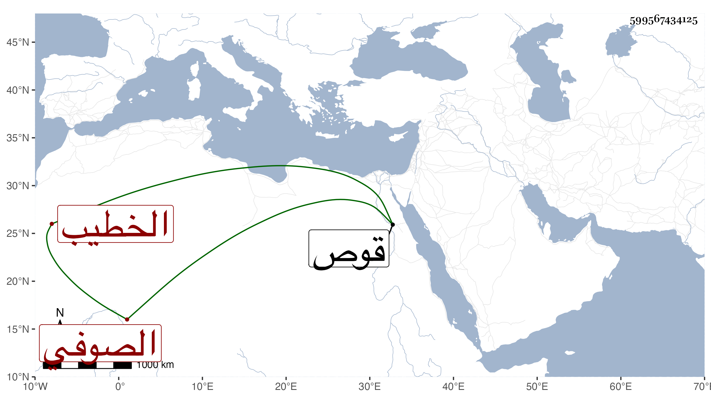

0902Sakhawi.DawLamic.ITO20230111-ara1.EIS1600.599567434125
Biography ID: 599567434125
568
محمد بن علي بن محمد الخطيب الصوفي . شخص لقيه محمد المرشدي المكي بها في شوال سنة أربع وعشرين وثمانمائة فصافحه وأخبره بها عن الجمال عبد الله بن أحمد بن أبي القسم الأموي الخلاطي المالكي الكحال عن عمه الشمس محمد بن أبي القسم عن الشهاب أبي العباس أحمد بن عبد الغفار بقوص عن أبي العباس الملثم عن معمر وهو باطل فمعمر لا وجود له وشابكه وأخبره بها عن العز بن أبي بكر ابن جماعة وأنه شابك أبا عبد الله محمد شيرين وهو أبوه بسنده الذي انتهاؤه منام وألبسه الخرقة وأنه لبسها من العلاء أبي الحسن علي بن محمد ومن عمه التقي أبي بكر بن يحيى بن أبي العباس أحمد بن العماد أبي صلح بن أبي بكر بن عبد الرزاق بن الشيخ عبد القادر الكيلاني بلباس أولهما من أبيه وهو وأخوه من أبيهما وهكذا إلى انتهائه .
